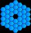

|  |
Reduction of Low-Dispersion Spectra in IRAF |
hedit *.fits dispaxis 2 add+ verify- update+
mktracer 24des0057 trace
xdistcor input output refwhere:
Write coordinate map to the database (yes)?After this, the program will remove the x distortion from all of your images.
implot outrefwhere outref is the name of your corrected trace image. You'll get a plot of the middle row of your image. Zoom in on the region occupied by your features by placing the cursor to the lower left of your leftmost feature, pressing e to define an expansion box, then moving to the upper right of your rightmost feature and pressing e again. Now overplot a row near the bottom using the following commands:
:o :l10Finally, overplot a line near the top:
:o :l1010The resulting plot should show nicely aligned features. If so, your images are fine and you can proceed to remove y distortions. If not, you'll need to go back and check why things may have failed.
ydistcor input output refwhere:
plotcuts y1=first y2=lastwhere first and last are the starting and ending rows of the region to plot. If the magic works, the resulting plot should show that the night sky lines are perfectly aligned.
input = "*ms.fits" List of input images
nfind = 1 Number of apertures to be found automatically
(output = "") List of output spectra
(apertures = "") Apertures
(format = "multispec") Extracted spectra format
(references = "") List of aperture reference images
(profiles = "") List of aperture profile images\n
(interactive = yes) Run task interactively?
(find = yes) Find apertures?
(recenter = no) Recenter apertures?
(resize = no) Resize apertures?
(edit = yes) Edit apertures?
(trace = yes) Trace apertures?
(fittrace = yes) Fit the traced points interactively?
(extract = yes) Extract spectra?
(extras = yes) Extract sky, sigma, etc.?
(review = no) Review extractions?\n
(line = INDEF) Dispersion line
(nsum = -25) Number of dispersion lines to sum or median\n\n
(lower = -10.) Lower aperture limit relative to center
(upper = 10.) Upper aperture limit relative to center
(apidtable = "") Aperture ID table (optional)\n\n# DEFAULT BACKG
(b_function = "chebyshev") Background function
(b_order = 1) Background function order
(b_sample = "-30:-6,6:30") Background sample regions
(b_naverage = -100) Background average or median
(b_niterate = 0) Background rejection iterations
(b_low_reject = 3.) Background lower rejection sigma
(b_high_rejec = 3.) Background upper rejection sigma
(b_grow = 0.) Background rejection growing radius\n\n# APERTU
(width = 5.) Profile centering width
(radius = 10.) Profile centering radius
(threshold = 0.) Detection threshold for profile centering\n\n#
(minsep = 5.) Minimum separation between spectra
(maxsep = 1000.) Maximum separation between spectra
(order = "increasing") Order of apertures\n\n# RECENTERING PARAMETERS\n
(aprecenter = "") Apertures for recentering calculation
(npeaks = INDEF) Select brightest peaks
(shift = yes) Use average shift instead of recentering?\n\n#
(llimit = INDEF) Lower aperture limit relative to center
(ulimit = INDEF) Upper aperture limit relative to center
(ylevel = 0.1) Fraction of peak or intensity for automatic wid
(peak = yes) Is ylevel a fraction of the peak?
(bkg = yes) Subtract background in automatic width?
(r_grow = 0.) Grow limits by this factor
(avglimits = no) Average limits over all apertures?\n\n# TRACING
(t_nsum = 25) Number of dispersion lines to sum
(t_step = 25) Tracing step
(t_nlost = 100) Number of consecutive times profile is lost bef
(t_function = "chebyshev") Trace fitting function
(t_order = 2) Trace fitting function order
(t_sample = "*") Trace sample regions
(t_naverage = 1) Trace average or median
(t_niterate = 10) Trace rejection iterations
(t_low_reject = 3.) Trace lower rejection sigma
(t_high_rejec = 3.) Trace upper rejection sigma
(t_grow = 0.) Trace rejection growing radius\n\n# EXTRACTION
(background = "fit") Background to subtract
(skybox = 1) Box car smoothing length for sky
(weights = "variance") Extraction weights (none|variance)
(pfit = "fit1d") Profile fitting type (fit1d|fit2d)
(clean = yes) Detect and replace bad pixels?
(saturation = INDEF) Saturation level
(readnoise = "30") Read out noise sigma (photons)
(gain = "5") Photon gain (photons/data number)
(lsigma = 4.) Lower rejection threshold
(usigma = 4.) Upper rejection threshold
(nsubaps = 1) Number of subapertures per aperture
A bracket should appear above the location of each object. The width of the bracket indicates the region that will be extracted to define your spectrum. Obviously, you want this to obtain as much of the light from the target as possible without including too much of the night sky background light. Use the u and l keys to adjust the upper and lower limits of the aperture to an appropriate size for your object. If in doubt, be a little generous with the size - the ``optimal extraction'' algorithm employed by apall will weight each pixel appropriately based on the amount of light.
If an object is not visible, use the command :line N to move to the column where the spectrum was determined to be the most visible, then use m to mark that spectrum and adjust the size as needed.
imarith myspec[*,N,1] / myspec[*,N,4] snrwhere N is the aperture number. If you inspect this spectrum with splot or implot, you'll see that the values vary widely due to the generally small size of the signal and the wildly varying intensity of the background. Determine the typical S/N per pixel by using
imstat snr field="midpt"to compute the median. The spec_s2n task will do this for you!
input = "*ms.fits" List of input spectra
output = "set1_avsigclip" List of output spectra
(noutput = "") List of output number combined spectra
(logfile = "STDOUT") Log file\n
(apertures = "") Apertures to combine
(group = "apertures") Grouping option
(combine = "average") Type of combine operation
(reject = "avsigclip") Type of rejection\n
(first = no) Use first spectrum for dispersion?
(w1 = INDEF) Starting wavelength of output spectra
(w2 = INDEF) Ending wavelength of output spectra
(dw = INDEF) Wavelength increment of output spectra
(nw = INDEF) Length of output spectra
(log = no) Logarithmic increments?\n
(scale = "median") Image scaling
(zero = "none") Image zero point offset
(weight = "median") Image weights
(sample = "") Wavelength sample regions for statistics\n
(lthreshold = INDEF) Lower threshold
(hthreshold = INDEF) Upper threshold
(nlow = 1) minmax: Number of low pixels to reject
(nhigh = 1) minmax: Number of high pixels to reject
(nkeep = 1) Minimum to keep (pos) or maximum to reject (neg
(mclip = yes) Use median in sigma clipping algorithms?
(lsigma = 3.) Lower sigma clipping factor
(hsigma = 3.) Upper sigma clipping factor
(rdnoise = "25") ccdclip: CCD readout noise (electrons)
(gain = "5") ccdclip: CCD gain (electrons/DN)
(snoise = "0.") ccdclip: Sensitivity noise (fraction)
(sigscale = 0.1) Tolerance for sigma clipping scaling correction
(pclip = -0.5) pclip: Percentile clipping parameter
(grow = 0) Radius (pixels) for 1D neighbor rejection
(blank = 0.) Value if there are no pixels
These parameters will give you a resultant image in
which discrepant pixels have been rejected. Note that
the avsigclip rejection algorithm used here
relies on knowledge of the detector gain and readnoise,
so be cure to set the corresponding task parameters
gain and rdnoise appropriately.
imcopy myspec[*,1,3] skywhere myspec is the name of your image.
splot skyPrint out a paper copy by moving the cursor into the plot and hitting the = key.
inlines = "nirspec$lowd_ir_ohlines.dat" File listing sky lines outlines = "oh_lines" Output line list [optional] outimage = "oh_image" Name of image to create [optional] (wavelength = 15904.) Central wavelength [Angstroms] (dispersion = 2.901) Dispersion [Angstroms/px] (fwhm = 5.) Width of sky lines [px] (ncols = 1024) number of pixels in spectrum (identify = yes) Identify lines? (nlines = 30) Number of lines to identify (graphics = "stdgraph") Graphics outimage deviceEdit the parameters for the task using the epar command and change the values of the parameters wavelength, dispersion, and fwhm as appropriate for your data. Run the task and inspect the resulting plot to verify that covers the same wavelength regime as your sky spectrum. Change parameters and re-run if necessary until all of the lines in your sky spectrum are represented in the simulated spectrum. The task creates a list of the nlines strongest OH emission features and stores it in the file outlines. Create a hardcopy of the plot using the = key.
images = "sky" Images containing features to be identified
crval = Approximate coordinate (at reference pixel)
cdelt = Approximate dispersion
(section = "middle col") Section to apply to two dimensional images
(database = "database") Database in which to record feature data
(coordlist = "oh_lines.dat") User coordinate list
(units = "Angstroms") Coordinate units
(nsum = "10") Number of lines/columns/bands to sum in 2D imag
(match = -3.) Coordinate list matching limit
(maxfeatures = 30) Maximum number of features for automatic identi
(zwidth = 100.) Zoom graph width in user units
(ftype = "emission") Feature type
(fwidth = 5.) Feature width in pixels
(cradius = 10.) Centering radius in pixels
(threshold = 30000.) Feature threshold for centering
(minsep = 5.) Minimum pixel separation
(function = "spline3") Coordinate function
(order = 1) Order of coordinate function
(sample = "*") Coordinate sample regions
(niterate = 1) Rejection iterations
(low_reject = 4.) Lower rejection sigma
(high_reject = 4.) Upper rejection sigma
(grow = 0.) Rejection growing radius
(autowrite = no) Automatically write to database
(graphics = "stdgraph") Graphics output device
(cursor = "") Graphics cursor input
(aidpars = "") Automatic identification algorithm parameters
Set the parameter coordlist to the name of the
file you generated with skyplot. Set
maxfeatures to at least the number of features
listed in that file. Set the threshold to a reasonable
minimum value for bright features based on an inspection
of your science spectrum (this helps avoid
misidentification of lines.
Write feature data to the database?
hedit set1_avsigclip refspec1 sky add+ update+
input = "set1_avsigclip" List of input spectra
output = "set1_dispcor" List of output spectra
(linearize = no) Linearize (interpolate) spectra?
(database = "database") Dispersion solution database
(table = "") Wavelength table for apertures
(w1 = INDEF) Starting wavelength
(w2 = INDEF) Ending wavelength
(dw = INDEF) Wavelength interval per pixel
(nw = INDEF) Number of output pixels
(log = no) Logarithmic wavelength scale?
(flux = yes) Conserve flux?
(samedisp = no) Same dispersion in all apertures?
(global = no) Apply global defaults?
(ignoreaps = no) Ignore apertures?
(confirm = no) Confirm dispersion coordinates?
(listonly = no) List the dispersion coordinates only?
(verbose = yes) Print linear dispersion assignments?
(logfile = "") Log file
The parameters listed will apply the solution without
rebinning the spectrum.
inimage = "set1_dispcor" input image(s)
outimage = "set1_pretty" output image(s)
skyimage = "sky" image containing sky spectrum
(thresh = 10000.) sky value above which to excise
(verbose = no) print operations?
Set the thresh parameter to the value for onset
of strong night sky emission as determined in the
previous step.
{kind=link}
{kind=link}
{kind=link}
{kind=link}
{kind=link}
{kind=link}
{kind=link}
{kind=link}
{kind=link}